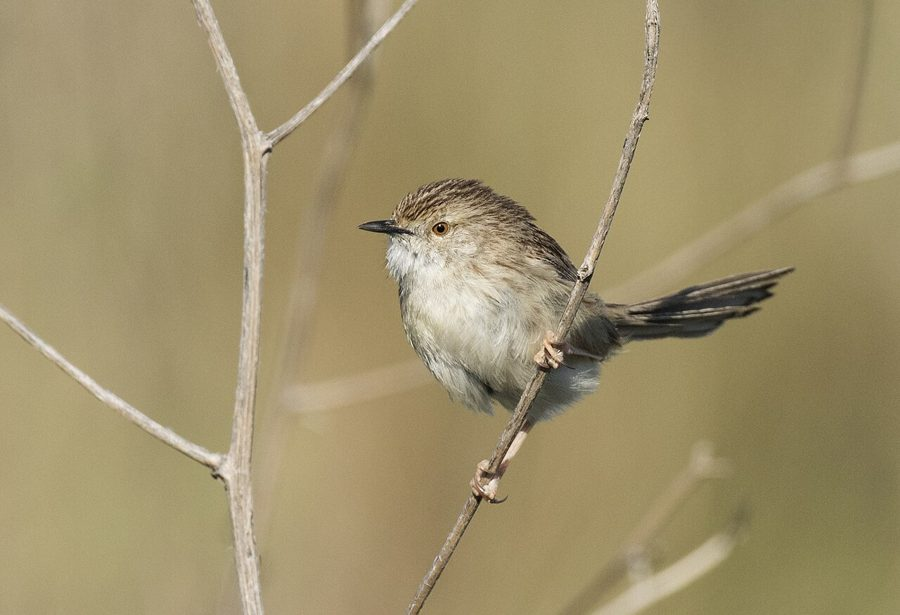

डेलिकेट प्रिनियाDelicate Prinia
Prinia lepida · Cisticolidae · BRD-0215

- Scientific name वैज्ञानिक नाम
- Prinia lepida (Horsfield, 1821)
- Family कुल
- Cisticolidae
- Hindi हिंदी
- डेलिकेट प्रिनिया
- Local names स्थानीय नाम
- delicate prinia, prinia
- Status here यहाँ की स्थिति
- native
- Movement आवागमन
- Resident, here all year
- Known from कहाँ दर्ज
- Others have published records from the Basti–Ayodhya districts बस्ती–अयोध्या के ज़िलों से दूसरों के प्रकाशित अभिलेख
- IUCN IUCN
- LC
- Review समीक्षा
- audited and independently read
When to look कब देखें
Present all year. साल भर मौजूद।
Uses and possibilities उपयोग और संभावनाएँ
Drawn from the documented uses in the profile below, where each is labelled traditional, current or a research lead. All uses →
Tell it apart from इनसे अलग पहचानें
डेलिकेट प्रिनिया / Delicate Prinia
Prinia lepida (Horsfield, 1821) — Cisticolidae
डेलिकेट प्रिनिया — यह बहुत छोटी, सरल भूरी चिड़िया पूर्वी उत्तर प्रदेश के घास के मैदानों, बागों और नरकुल के बिस्तरों में साल भर पाई जाती है। इसकी सबसे बड़ी पहचान इसकी लंबी, नुकीली पूंछ है जो शरीर के बराबर लंबी होती है। यह बहुत छोटी, भूरी-पीली चिड़िया है जो घास में छिपी रहती है और तेज़ आवाज़ से गाती है।
Quick Identification त्वरित पहचान
| Feature | Description |
|---|---|
| Size | Very small warbler; 12–13 cm total length |
| Tail | Distinctively long, at least as long as body; slender and pointed |
| Plumage | Plain buff-brown above; whitish-buff below |
| Crown | Slightly greyer than back |
| Bill | Fine, pointed, adapted for gleaning |
| Underparts | Buff-white; pale throat |
| Behaviour | Skulking; stays in grass and low vegetation |
| Call | Loud, insistent voice; musical song |
Field tip: A very small, slim warbler with a disproportionately long tail in grassy habitats. The long tail is the key identification feature. Often heard before seen; song is a loud, clear whistling phrase. Stays in tall grass and reeds where it is hard to see.
हिंदी — कैसे पहचानें:
बहुत छोटी चिड़िया; लंबी पूंछ।
भूरी-पीली रंग की।
घास में छिपी रहती है।
तेज़, सुंदर गायन।
Morphology आकारिकी
Biometrics:
| Measurement | Range |
|---|---|
| Total length | 120–130 mm |
| Wing (flattened chord) | 50–60 mm |
| Tail | 60–70 mm |
| Bill | 11–13 mm |
| Tarsus | 17–19 mm |
| Weight | 7–10 g |
Size: 12–13 cm long; wingspan 15–18 cm. Weight 7–10 g.
Plumage: Above buff-brown or olive-brown. Crown slightly greyer. Back and rump uniform. Wings and tail brownish. Underparts buff-white or cream, with pale throat and chest. Undertail coverts buff. No wing bars or other obvious markings.
Bill: Fine, pointed, typical of grass and insect gleaner.
Tail: Long, slender, slightly graduated; when perched, often cocked upward.
Legs and feet: Thin, brownish.
Sexes: Males may be very slightly larger or darker; not obviously dimorphic.
Vocalisations
- Song: A loud, clear, melodious series of whistled notes: whee-whee-whee, given from a grass stem or exposed perch. Surprisingly loud for the bird's size.
- Contact calls: Soft chirps and calls between individuals.
- Alarm call: Harsh churring when disturbed.
हिंदी: जोर से गाती है। "हीप-हीप" की आवाज़ देती है। घास में रहते हुए गाती है।
Behaviour & Ecology व्यवहार और पारिस्थितिकी
Grassland specialist: Entirely dependent on tall grass, reeds and light undergrowth. Gleaning insectivore that moves through grass stems, picking insects and spiders.
Feeding: Insects, spiders and small invertebrates gleaned from grass stems, leaves and among grass tufts. Occasionally small seeds.
Skulking behaviour: Very secretive; stays deep in grass cover. More often heard than seen. Moves about by hopping up grass stems and along the ground.
Solitary to pairs: Usually solitary or in pairs; may join mixed feeding flocks in winter.
Roosting: In tall grass or reed beds.
Territorial: Resident and territorial. Sings year-round, especially at dawn and dusk.
हिंदी: घास में रहता है। बहुत छिपा हुआ; सुनने में आता है, देखने में नहीं। जोड़ों में या अकेले रहता है।
Life Cycle / Phenology जीवन चक्र
Resident: Year-round resident; breeds locally in the region (April–September).
Breeding: Nest is a small, domed structure woven from grass, placed low in grass tufts or reeds. Lays 3–4 eggs.
Clutch: 3–4 eggs per clutch; two broods per year.
Incubation: 12–14 days.
Fledging: Chicks fledge in approximately 12–14 days.
Moult: Complete annual moult.
हिंदी: साल भर यहाँ रहता है। अप्रैल से सितंबर तक प्रजनन करता है। घास में घोंसला बनाता है।
Host Plants or Prey आहार
Primary food items:
- Small insects and insect larvae
- Spiders
- Tiny beetles
- Ants
- Small grass seeds (occasionally)
Gleaned from grass stems, leaves and among grass tufts during active foraging.
हिंदी: कीड़े और मकड़ियाँ खाता है। घास में चुनकर खाना निकालता है।
Predators / Natural Enemies शत्रु
- Raptors: Small falcons and shrikes (which hunt small birds)
- Corvids: House crows may predate eggs or chicks
- Snakes: Grass snakes may raid nests
- Parasites: Nest parasites and blood parasites typical of small warblers
Agricultural / Human Relevance कृषि प्रासंगिकता
Pest control: By gleaning insects and spiders from grass, assists in natural pest control in grasslands and fallow fields.
Habitat loss: The principal threat is loss of tall grass habitat due to agricultural intensification and grazing. Requires year-round grassland cover.
Legal status: Protected under the Wildlife Protection Act 1972. Not hunted. Populations stable but declining where grasslands are lost.
Expected Locally स्थानीय रूप से अपेक्षित
Not a field record. Written from published accounts for eastern Uttar Pradesh. No confirmed local sighting yet — if you have seen it, that is what the atlas needs.
अभी तक स्थानीय पुष्टि नहीं। यह विवरण प्रकाशित स्रोतों से है, किसी अवलोकन से नहीं।
GBIF holds published records from these districts. Expected year-round in grasslands, reed beds, and tall fallow fields in the region. Most visible during the breeding season (April–September) when males sing prominently. Numbers may fluctuate seasonally depending on grass harvesting and water availability. More common in protected wetland areas with standing vegetation. The first local record would be a photograph of the bird showing its distinctive long tail and plain plumage, with place and date, submitted through the About page.
हिंदी: साल भर घास के मैदानों में देखे जाने की उम्मीद है। प्रजनन के समय ज़्यादा दिखाई देते हैं। पहला रिकॉर्ड फोटोग्राफ के साथ तारीख़ और जगह दिखानी चाहिए।
Distribution वितरण
Global range: Indian subcontinent from the plains to 2000 m elevation. Resident and partial migrant throughout.
In India: Throughout the Indian peninsula; expected in suitable grassland habitat.
In Uttar Pradesh: Resident throughout the state; expected in areas with grassland and wetland vegetation.
In Basti district / eastern UP: Year-round resident in grassy areas and wetland margins; expected wherever tall grass and reed beds occur.
Research Questions शोध प्रश्न
- How does the population density of delicate prinias vary seasonally in relation to grass cutting and harvesting?
- What is the detailed nesting ecology and success rate of delicate prinias in cultivated landscapes?
- क्या सूखा और बाढ़ इस चिड़िया की आबादी को प्रभावित करते हैं?
- Are different grass species preferred for foraging and nesting?
- How mobile are delicate prinias; do they maintain the same territory year-round? (Can be tracked through observation and mist-netting.)
- क्या कीटनाशकों का उपयोग इस चिड़िया की संख्या में बदलाव ला रहा है?
Similar Species मिलती-जुलती प्रजातियाँ
| Species | Key Difference | Hindi | Field Rule | |
|---|---|---|---|---|
| [[ashy_prinia\ | Ashy Prinia]] (Prinia socialis) | Ashy prinia is larger, greyer overall, with a shorter tail | — | Delicate prinia is smaller, browner, with a longer, more conspicuous tail. |
| Jungle Prinia (Prinia sylvatica) | Jungle prinia is larger, darker, with longer tail; prefers heavier cover | — | Delicate prinia is smaller and paler; prefers more open grassland. |
Field rule: Delicate prinia is a very small, plainly coloured warbler with a distinctively long tail relative to body size. If the bird is larger and greyer, it is an ashy prinia. If in dense jungle rather than grassland, likely a jungle prinia.
Taxonomy & Classification वर्गीकरण
Original description. Described by Horsfield in 1821 in Transactions of the Linnean Society as Motacilla lepida. Type locality is Java.
Subspecies. Several subspecies; Indian populations are P. l. lepida and P. l. delicata.
Family and order placement. Order Passeriformes; family Cisticolidae (wren-warblers and cisticolas). Genus Prinia comprises small, long-tailed insectivorous warblers of Africa and Asia.
Phylogenetic notes. Closely related to other Prinia species of the Indian subcontinent and Southeast Asia.
IUCN status rationale. Least Concern globally. Widespread and common in suitable grassland habitat across the Indian subcontinent. Adaptable to human-modified grasslands and wetlands.
हिंदी: भारत के सभी हिस्सों में साल भर पाई जाती है। कानूनी सुरक्षा में है।
Photo Gallery फोटो गैलरी
No photos yet — add field photos to media/species/delicate_prinia/ and run node scripts/sync_photos.js.
Wanted photos:
- Bird perched in grass showing long tail
- Singing bird
- Close-up of head and bill
- Bird in grass habitat
References संदर्भ
- Horsfield, T. (1821). Transactions of the Linnean Society of London, 13: 148.
- Ali, S. & Ripley, S. D. (1987). Handbook of the Birds of India and Pakistan. Vol. 5 (Warblers to Redstarts). Oxford University Press, Delhi. Pp. 185–188.
- Grimmett, R., Inskipp, C. & Inskipp, T. (2011). Birds of the Indian Subcontinent (2nd edn). Oxford University Press, Delhi. Pp. 378.
- Rasmussen, P. C. & Anderton, J. C. (2012). Birds of South Asia: the Ripley Guide (2nd edn). Lynx Edicions, Barcelona. Vol. 2, Pp. 622.
- GBIF Occurrence Data — Prinia lepida, India.
- IUCN Red List (2023). Prinia lepida — BirdLife International. IUCN, Cambridge. Status: Least Concern.
Source file: species/fauna/birds/delicate_prinia.md